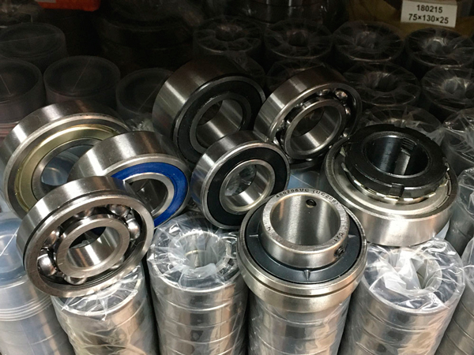

Категории подшипников ГОСТ: шариковые радиальные, шариковые радиальные сферические, роликовые радиальные с короткими цилиндрическими роликами, роликовые радиальные сферические, роликовые радиально-упорные сферические, роликовые игольчатые, роликовые радиальные с длинными цилиндрическими роликами, роликовые радиальные с витыми роликами, шариковые радиально-упорные, роликовые-радиально упорные конические, шариковые упорные и упорно-радиальные, роликовые упорные и упорно-радиальные, подшипники шарнирные, в колесо тачки, для ремонта.
Система условных обозначений подшипников ГОСТ (скачать документ)
Таблица аналогов импорных подшипников (скачать документ)